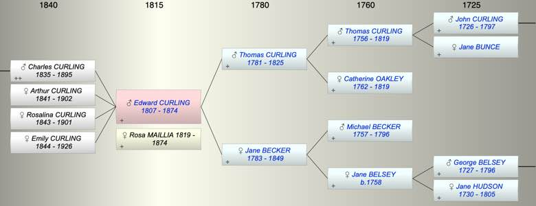

| [Index] |
| Edward CURLING (1807 - 1874) |
|  |
| b. 1807 |
| +. Rosa Paula MAILLIA (1819 - 1874) |
| d. 1874 aged 67 |
| Parents: |
| Thomas Oakley CURLING (1781 - 1825) |
| Jane BECKER (1783 - 1849) |
| Children (4): |
| Charles Edward Napier CURLING (1835 - 1895) |
| Arthur Henry CURLING (1841 - 1902) |
| Rosalina Jane CURLING (1843 - 1901) |
| Emily Theresa CURLING (1844 - 1926) |
| Grandchildren (4): |
| Richbell Napier CURLING, Charles Edward William CURLING (1866 - 1915) |
| Events in Edward CURLING (1807 - 1874)'s life | |||||
| Date | Age | Event | Place | Notes | Src |
| 1807 | Edward CURLING was born | ||||
| 1825 | 18 | Death of father Thomas Oakley CURLING (aged 44) | |||
| 1835 | 28 | Birth of son Charles Edward Napier CURLING | |||
| 1841 | 34 | Birth of daughter Arthur Henry CURLING | |||
| 1843 | 36 | Birth of daughter Rosalina Jane CURLING | |||
| 1844 | 37 | Birth of daughter Emily Theresa CURLING | |||
| 1849 | 42 | Death of mother Jane BECKER (aged 66) | |||
| 1874 | 67 | Edward CURLING died | |||
| 1874 | 67 | Death of wife Rosa Paula MAILLIA (aged 55) | |||
| Created on a Mac™ using iFamily for Mac™ on 8 Oct 2023 |